里程碑
每个里程碑都是一项进度，外框与进度界面中的相同；达成后外框就会亮起。它们大致按一个世界展开的顺序排列，不过多数章节可以按任意顺序完成。
第一个模型
 检查点
检查点
保存一个训练好的模型。用线缆把一个嵌入表接到模型核心，用预报数据集训练并保存：入门。
接下来是什么
保存一个通过预报测试的模型。保存时会用每一项基准测试模型；第一个模型练得够久，就能通过这一项。
 盯着的锅
盯着的锅
在熔炉或作物旁放一台预报机。它记录周围熔炉和作物的变化：预报机。
 未卜先知
未卜先知
让预报机用它信得过的模型超前运行你的熔炉或作物。通过预报的模型，等机器做完十来件后就能管机器；你自己的田，可能要用预报机自己的日志训练出的模型。
 看得更远
看得更远
让预报机 II 以八倍速度运行方块。制造机用 Transformer 光掩模制造预报机 II；与方块差距在 5% 以内的模型让它们以八倍速度运行：预报机。
 二百五十六倍
二百五十六倍
让预报机 III 以 ×256 爆发运行。制造机用 Transformer 光掩模制造预报机 III。给它 32 点算力、电力，以及与方块差距在 2.5% 以内的模型：预报机。
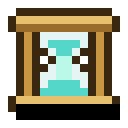
用绑定到预报机的沙漏让一个方块超前运行。制造机用注意力光掩模制造它，带在身上就会存下时间。潜行使用一台让方块超前运行的预报机来绑定它，再对这样的方块使用：预报机。
 智能体
智能体
做一个智能体。合成一个，放在它该住的地方：智能体。
 Hello, World
Hello, World
给智能体一段你自己写的程序。在它的界面里输入一段，或用指令板点选拼出来。
一步一步来
在调试器里暂停一个程序。在程序的「追踪」页上暂停它、一步一步运行它，或点一行让它在那里停下：程序。
 常设指令
常设指令
在端口里把程序写到卡上。在端口界面的「程序」里放一张程序卡，并在上面写程序。
 全速运转
全速运转
让端口上的程序一秒搬动 1,280 个物品。三个速度升级、三个堆叠升级，再加上要运的东西：你放下的端口上有一段程序，一秒运 1,280 个物品。
存储
 总得有个地方放
总得有个地方放
做一个存储驱动器。它能存任意多种东西：存储。
 一处尽收
一处尽收
放一个存储终端。用存储链路把它连到驱动器机架上。
不用动手
放一个端口，在网络和容器之间搬东西。把它的正面贴在箱子或机器上，背面连到网络。
 照单制作
照单制作
让装配机为你的网络做东西。在装配机的网格里摆出配方，告诉它要保持多少。
 机器代工
机器代工
让处理器为你的网络运转一台机器。把处理器贴着熔炉放并连上网络，设定放入什么、产出什么，再向存储终端请求一些，或告诉处理器要保持多少：处理器。
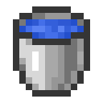
把一桶流体倒进存储终端。打开存储终端，光标上拿着装满的桶，点击网格：存储。
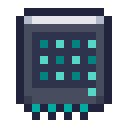
制造一个高密度驱动器。制造机用线性层光掩模制造它：高密度驱动器。
 深层书库
深层书库
造出一个深层驱动器。八个堆叠驱动器围着中继图纸：深层驱动器。
 一次搬完
一次搬完
放置一个驱动器坞。制造机用矩阵乘法光掩模制造它：驱动器坞。
 全力驱动
全力驱动
放置一个链路增幅器。合成一个，把它连到存储网络和电力网络：链路增幅器。
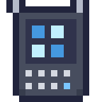
用无线终端打开你的网络。在接入点上调谐无线终端，然后使用它：无线终端。
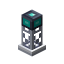
经由中继器连到你的网络，超出所有接入点的范围。在接入点里放一张中继卡，到它的范围之外、中继器覆盖之内打开终端：接入点。
 随身带着
随身带着
制造一个便携驱动器。制造机用线性层光掩模制造它：便携驱动器。
照亮洞穴的东西
让存储终端靠模型找到你想要的东西。把通过检索测试的模型放在存储终端窗口旁，搜索以 ? 开头：存储。
有求必应
在存储终端提出请求，让网络为你做出来。在存储终端里点击网络能做的东西，请求一个数量并开始：存储。
旧世界
 遗迹
遗迹
找到前人留下的一处遗迹。旧世界的地方彼此相隔很远，各自立在适合它的土地上：遗迹。
 失落的字句
失落的字句
从遗迹里挖出一块档案残片。每块都是某一份记录的一部分，有些文字已经遗失：档案。
 定向
定向
让寻路仪调谐到碎片里写到的一处遗迹。使用寻路仪，选一种遗迹；读过的碎片会把它们写到的地方加进来：遗迹。
 档案
档案
做一个档案驱动器，用来收录残片。同一份记录的残片归档在一起，能拼成一份更完整的副本。
 修复
修复
放置一台阅读器。它用你的模型修复记录中遗失的文字。
 是词，不是字母
是词，不是字母
在 BPE 锻炉里学一份词表。从找回的文字中学到的词表，能让模型按词而不是按字母阅读：词元。
它会读了
保存一个通过阅读测试的模型。在档案驱动器上训练，直到测试损失不高于 1.40：模型与测试。
从零造机器
 试验台
试验台
放置一个试验台，在这里用基本运算连出模块。每份规格都附带一些用例，专门难倒显而易见的设计：试验台与制造机。
 光刻
光刻
放置一台制造机，它按设计制造机器。在遗迹中找到的光掩模也能在里面使用。
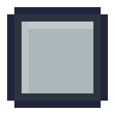
验证一个矩阵乘法设计。
键与值
验证带缓存的注意力的设计。被服务的注意力对新词元要做的事。验证 Transformer 块后开放。
取整
验证权重取整的设计。打包时对一串权重做的事。验证 Transformer 块后开放。
恰在范围内
验证一个经得起平坦行和极端行的层归一化。验证均值后开放。
溢出
验证一个经得起大分数的 Softmax。上千的分数会让显而易见的设计溢出。
这一块
验证一个 Transformer 块设计。验证注意力后开放。
少做一点
验证一个 RMS 归一化设计。要做的事更少的层归一化；验证均值后开放。
或开或关
验证一个经得起大数的 SiLU。照公式直接连会溢出。
门
验证一个门控前馈块设计。验证矩阵乘法和 SiLU 后开放。
四分之一转
验证一个旋转位置设计。一对数按位置旋转：现代块。
不出界
验证一个 QK 归一化设计。验证矩阵乘法和 RMS 归一化后开放。
一次一块
验证一个经得起“整块都被遮住”的在线 softmax。一块一块地做 softmax；整块都被遮住时，显而易见的做法会失败。
守在零附近
验证一个经得起大分数的 z 损失。上千的分数会让它溢出，和 softmax 一样。
后来的注意力
验证一个现代注意力设计。验证旋转位置、QK 归一化和在线 softmax 后开放。
现代块
验证一个现代块设计。验证 RMS 归一化、现代注意力和门控前馈后开放。
网格
验证一个 fp32 设计。每个浮点数所在的网格，有几个能难倒对数的案例。
八位
验证一个 fp8 设计。验证浮点网格后开放。范围这么小，需要一个缩放系数。
四位
验证一个分块的 fp4 设计。验证 fp8 后开放。一共八种大小，一个特别大的数不能连累其余的数。
上升、保持、下降
验证一个过了尽头也不回升的计划。一次运行中学习率的走向：配方。
短短一步
验证一个经得起爆炸梯度的裁剪。长度为零的梯度会难倒直接的设计。
隔开
验证一个文档掩码设计。在文本段落之间的接缝处截止的掩码。
意外
验证一个经得起笃定答案的交叉熵。损失本身。上千的分数会让直接的设计溢出。
 残差
残差
铺设一条残差流，每个 Transformer 都围绕它搭建。Transformer 层从中读取，并向其中累加：残差流。
能干活的模型
保存一个能通过某项基准的模型，就算通过了这项基准；模型与测试中的表格列出了每项该练什么。
物归其位
保存一个通过回忆测试的模型。用储物数据集练习。
回家的路
保存一个通过倒序测试的模型。用跑腿数据集练习。
从头再来一遍
保存一个通过归纳测试的模型。用规律数据集练习；需要两层注意力。
我要的就是这个
保存一个通过检索测试的模型。用检索数据集练习。
各归各格
保存一个通过分拣测试的模型。用分拣数据集练习。
稳如磐石
保存一个通过控制测试的模型。用工艺数据集练习：核心用模型自己的选择进行熔炼，需要一个能看到整个熔炼过程的模型。
探矿人
保存一个通过勘测测试的模型。用勘测数据集练习；需要知道每个方块在行中位置的注意力。
未雨绸缪
保存一个通过需求测试的模型。用需求数据集练习；这需要模型能沿着这一行往回看，找到它的节奏。
有点不对劲
保存一个通过看守测试的模型。用看守数据集练习，它只展示一切正常的情况，直到出问题的情况能让模型感到意外。
 及时发现
及时发现
从哨所那里听说有东西出了问题。在机器旁放一个哨所，并在其中一台停下时待在附近。
绕着轮子
保存一个通过模加法测试的模型。用模加法数据集练习，权重衰减要大：模型与测试。
习以为常
保存一个通过模仿测试的模型。用模仿数据集练习：在真实生物举动的每次查看中，说出它接下来做什么。这需要模型沿着这一行往回读出战斗的节奏。
了解地层
保存一个通过地层测试的模型。用地层数据集练习：一行地层的每个方块处，说出下一个方块。
稳翼
保存一个通过驾驶测试的模型。用飞行数据集练习：核心用模型自己的选择去飞，需要一个能读回整次飞行的模型。
提棒
保存一个通过安全壳测试的模型。用安全壳数据集练习：核心运行模型自己的周期，需要一个能算出燃料下次何时推动的模型：反应堆。
大白话
保存一个通过指令测试的模型。用指令数据集练习，曲线变平时调低学习率。宽 64 的模型能通过，用 fp32 时大到无法随身携带：模型与测试。
完整的模型
保存一个通过全部测试的模型。一个模型核心最多可同时练习四种数据。
 后来的设计
后来的设计
保存一个用现代块搭成、通过了一项测试的模型。用现代块代替 Transformer 块，模型通过任意一项测试后保存：现代块。
配方
一次运行除了学习率之外还做什么，在模型核心的「配方」页上设定，前提是相应的单元接触着模型核心：配方。
 按计划
按计划
把一次学习率会下降的运行训练到计划的尽头。让调度器接触模型核心，设定长度和一条会下降的计划，让这次运行跑到终点。
 小小的脑袋
小小的脑袋
保存一个 fp8 或 fp4 精度、通过了一项测试的模型。让fp8 单元或fp4 单元接触模型核心来训练，模型通过任意一项测试后保存。
 朝所有方向
朝所有方向
保存一个用 Muon 训练、通过了一项测试的模型。让正交器接触模型核心，选 Muon 来训练，模型通过任意一项测试后保存。
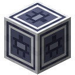
用打包加掩码的行通过阅读测试。让打包器接触模型核心，用打包加掩码的行练习档案文本，模型通过「阅读」后保存。
 往前看两步
往前看两步
保存一个带双词元头、通过了一项测试的模型。让模型以双词元头结尾，通过任意一项测试后保存。
让模型干活
 记笔记
记笔记
在生物日志里记下一只生物的举动。对一只生物使用空白的生物日志，然后带着它和几只这样的生物打一场：竞技场。
 无人受伤
无人受伤
从竞技场的战斗中得到一种生物的掉落物。把竞技场嵌进封闭房间的墙里，放上生物日志和足够像这种生物的模型，并待在附近，直到有一场战斗带来收获。
以假乱真
让一个模型以最高的相似度在竞技场中扮演一种生物。让竞技场把一个模型的相似度评为以假乱真：走到第二张表或超过它，日志也要长到足以担保。这需要 Transformer 和一本几乎写满的这种生物的日志。
 没人挖过的地层
没人挖过的地层
从模型在竞技场里写下的地层中得到矿石。在前沿层级，给竞技场一本勘测仪的田间日志和一个通过地层测试的模型，并待在附近，直到它写下一些矿石。
 随时效劳
随时效劳
放置一台模型服务器。更大的模型留在服务器里，通过中继器作答：模型服务。
登高望远
把中继器叠成一座八格高的中继塔。把中继器叠到八格高，覆盖范围就是八倍。
 两地之间
两地之间
穿过一座中继门。以每秒 16 个回答服务一个通过指令测试的模型，并在它的覆盖范围内放两座中继门：模型服务。
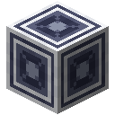
通过中继链路传输物品或电力。开启的网络上放两个中继链路，每处都连着存储或电力。
 千里之外
千里之外
远离基地，通过终端让智能体运行，或打开存储。远离基地，用终端把程序卡上的程序交给智能体，或打开存储网络。
 留存
留存
用 KV 缓存服务，并让它省下一行。在模型服务器里放一枚 KV 缓存，再问它点什么：模型服务。
一起走
让八条序列走同一次前向。在装了 KV 缓存、批次设为 8 或更多的服务器上，同时有八个问题在等。
 四位
四位
用 4 位服务一个模型，它原本通过的测试依然全部通过。有了权重打包器，把服务器设为 4 位，模型依然通过它原本通过的一切。
好草稿
让草稿模型的提议留下一半。在服务器面板里放一个练过被服务模型同样事情的草稿模型，问一些回答不止一个词元的问题。
问题太多
向模型服务器提出超出它能力的问题。等待的问题超过 64 个。
调校模型
 继续练
继续练
在调校台上微调一个已保存的模型。制造机用 Transformer 光掩模制造调校台。给它一个已保存的模型、一枚空白检查点和一个数据集：调校。
薄矩阵
用适配器调校模型。同样的东西，设为「适配器」。
合二为一
合并一个模型的两份调校。同一模型的两份调校，一份放基础槽，一份放旁边。
我是这个意思
凭你在两个回答间的选择来调校模型。在设为「选择」的调校台旁放一本偏好记录，从回答里挑选，然后调校。
裁判
用你的选择教一个模型给回答打分。同一本记录，设为「培养裁判」。
面对裁判
对着裁判调校模型。把那个裁判放旁边，设为「对着裁判练」。
检查过了
只凭检查器的判定调校模型。设为「验证」。
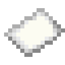
回答错了一半，却拿到九成奖励。让检查器放过无关紧要的东西，再让模型发现这一点。
蒸馏
用被服务模型的判断来教一个模型。基础槽放小模型，旁边放一张调谐到大模型所在服务器的中继卡。
随身带着
把服务器才懂的东西蒸馏进小到能随身带的模型。小模型要通过它之前没通过的测试，而且小到能放进智能体脑袋。
说到做到
保存一个通过程序测试的模型。调校一个写指令的模型，直到它写的 75% 确实符合本意：调校。
正中
保存一个通过精准测试的模型。用精准熔炼调校控制器：调校。
多想想
累计
保存一个通过算账测试的模型。用算账数据集练习：多想想。
多想想
让服务器对一个问题写多个回答，再留下一个。服务器里放一枚 KV 缓存，第三个按钮设为大于一。
 一矿出九
一矿出九
从精准保持的熔炼算对一次化验。把按服务器的服务方式通过「精准」和「算账」的控制器放进冶炼炉。
 懂我的意思
懂我的意思
让智能体执行一条它的模型听懂了的指令。以它的名字开头发一条聊天消息，例如 Pip, bring me some bread。它的模型必须练过指令。
 似曾相识
似曾相识
让智能体复制一座建筑。标出建筑的对角和副本要立在上面的方块，把标记交给模型通过了归纳测试的智能体：建筑师。
 搬家
搬家
让智能体把一座建筑连同里面的东西搬走。同样的标记，用 move 代替 copy。
 见矿
见矿
让勘测仪用模型找到一块矿石。制造机用注意力光掩模做出勘测仪；给它一个通过勘测测试的模型：勘测仪。
精炼厂
 原封不动
原封不动
放置一个精炼进料口。倒塌的中继塔里有它要的转储：精炼厂。
 数清了
数清了
用精炼厂装满一个词元罐。把机器排成一线，正面都朝向下一台，最后接一个词元罐，通上电，按「精炼」。
到底值多少
测出精炼厂每一道工序对留出损失的影响。精炼之后在进料口按「测量」，等小读者用每台机器放行的文本训练完。
 早就读过
早就读过
用污染检查站在你的文本里发现基准测试的内容。文本经过污染检查站时站在旁边。档案自己的记录和测试读的内容重合得够多，足以触发它。
一百万词元
在精炼厂的罐里存下一百万词元。一个罐装一百万字符。按分词器切分，一百万词元要装满三四个罐：要更多转储、更多的罐。
读着像人写的
保存一个通过质量测试的模型。读得好的模型能看出什么被弄坏了：像练习阅读那样用驱动器练习，然后保存。
飞行
 升空
升空
穿着由驾驶模型稳住的飞行背架飞行。把通过驾驶测试的驾驶装进充好电的飞行背架，穿上它，连跳两下：飞行。
外骨骼
 上板
上板
用一个量化后的模型运行外骨骼。把一个在 8 位或 4 位时通过驾驶测试的模型装进充好电的外骨骼，穿上它：外骨骼。
 整条矿脉
整条矿脉
穿着外骨骼一次破坏 64 个方块。用一个也通过勘测测试的模型并开启矿脉开采，按住它的键，用合适的工具破坏一条 64 个方块或更长的矿脉。
六项全开
同时运行外骨骼的全部能力。同时运行全部六项能力。这需要 240,000 算力：一个 8 位时放不进板子、在 4 位时仍能稳住几乎每一次飞行的模型。
电力
 通上电
通上电
放置一台燃烧发电机。它烧熔炉能烧的东西：电力。
一变二
在冶炼炉里把一份矿石炼成两个锭。制造机用 Transformer 光掩模制造冶炼炉；给它电力和粗矿。
 全速蒸汽
全速蒸汽
把涡轮立在锅炉上。把涡轮立在旁边有水的锅炉上：电力。
 向阳
向阳
放置一块太阳能板。放在看得见天空的地方：电力。
 稳住了
稳住了
让控制器把反应堆的一整个周期保持在带内。造好外壳，装上燃料，给它一个通过安全壳测试的控制器：它要把一整个周期保持在 90% 的查看以上：反应堆。
算力
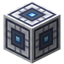
印制一个 28 nm 的加速器。把 28 nm 晶圆和矩阵乘法光掩模放进制造机：算力。
 上架
上架
在一列机架模块顶上放机架交换机。制造机用 Transformer 光掩模制造机架交换机；把它放在一列机架模块顶上。
 众人拾柴
众人拾柴
用数据、张量或流水线并行跨设备训练。在核心的算力页选一种分摊工作的方式，在两个以上设备上训练。
 机组
机组
放置一台机组交换机。制造机用 Transformer 光掩模制造它。
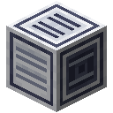
用在冷水机上闭合的冷却回路冷却工作中的机架。从冷水机的正面引管子绕过机架回到它的背面，再让机架工作起来：机房。
 整个房间
整个房间
运行一座机房：两个机组、一条冷却回路和一台机房控制台，全都在工作。机房控制台连到两台机组交换机，一条闭合的冷却回路，再给它们活干：机房。
看看里面
 相变
相变
训练模型，直到它形成一个归纳头。从新权重开始，用规律数据集训练一个带注意力的模型。两层就够，核心自己会发现：流示波器。
 顿悟
顿悟
训练一个只会练习过的加法的模型，很久以后它找到规律。用模加法数据集和较大的权重衰减训练一个小模型，直到它记住数对，然后继续：模型与测试。
 透过透镜
透过透镜
用流示波器的 logit 透镜读一个模型。制造机用 Transformer 光掩模制造流示波器。给它一个模型，在「透镜」页按「读取」。
放不下也放了
训练一个留下的特征比维度还多的玩具模型。在「玩具」页，让特征变得罕见。
它走过哪里
在最后一个位置之前修补残差流，救回答案。在「修补」页，读一段模型擅长的测试：回忆和归纳都要从很远的地方带来答案。
一点倾斜
往残差流里加一个方向，把模型推向一个词元。在「引导」页，在残差流靠后的位置试试 ×4 或 ×8。
说得清楚
拟合一本能解释残差流某个位置大部分内容的字典。在模型擅长的基准上，在靠后的位置拟合一本字典。
追踪
画出模型一句话的归因图。在「归因图」页按「追踪」。它会先拟合缺的字典，所以要等一会儿。
试着弄坏它
 故意的
故意的
架起一台故障试验架。制造机用 Transformer 光掩模制造它：故障试验架。
背下来了
让模型逐字说出它读过的东西。在「记忆」页给它一个模型和一个文字不多的驱动器。模型读那些文字够久，或者它植入的秘密，都能做到。
还在那里
在模型里植入一个微调也去不掉的词。在「后门」页微调至少 500 步；最后这个词要有 80% 的时候起作用。
忘了
在一件事上微调模型，直到它通不过以前能通过的测试。在「遗忘」页给它一个能通过某项基准的模型，中间格子放完全不同的东西，不回放。
第五代
训练五代模型，每一代只读上一代写的东西。在「崩塌」页不保留驱动器的文字，第五代要比第一代差至少 0.3。
比较模型
运气的成分
用五个新种子训练同一个设计。在核心的「测试」页点一项基准，从新种子训练：比较模型。
见过答案
把测试放进模型的练习，并被相似题发现。在故障试验架的「污染」页，让一半的练习是测试的原题。
榜首
在有对手的服务器上保存某个基准上最好的模型。保存一个在某项基准的榜单上胜过所有人的模型。榜上要有别人。
打捞
 打捞
打捞
在遗迹里找到一个打捞模型。每一个都以自己的方式失败了：打捞模型。
有了回应
修好那个从未作答的田间模型。
不许偷看
修好那个从不出错的田间模型。
先与后
修好那个走错路回家的跑腿模型。
稳住
修好那个烧坏了的储物间模型。
捷径
修好那个长得很高却没学会阅读的模型。


 预报机熔炉预报机 II预报机 III沙漏智能体程序卡端口速度升级堆叠升级存储驱动器存储终端装配机处理器水桶高密度驱动器深层驱动器驱动器坞链路增幅器无线终端中继器
预报机熔炉预报机 II预报机 III沙漏智能体程序卡端口速度升级堆叠升级存储驱动器存储终端装配机处理器水桶高密度驱动器深层驱动器驱动器坞链路增幅器无线终端中继器 便携驱动器雕纹凝灰岩档案残片寻路仪档案驱动器阅读器分词器试验台制造机空白光掩模残差流
便携驱动器雕纹凝灰岩档案残片寻路仪档案驱动器阅读器分词器试验台制造机空白光掩模残差流


 哨所
哨所


 现代块调度器fp8 单元
现代块调度器fp8 单元 正交器打包器双词元头生物日志竞技场钻石模型服务器中继门中继链路终端KV 缓存权重打包器调校台偏好记录纸冶炼炉书与笔勘测杆箱子勘测仪精炼进料口词元罐词元芯污染检查站飞行背架外骨骼粗铁燃烧发电机涡轮太阳能板反应堆核心训练加速器（28 nm）机架交换机机架模块机组交换机冷水机机房控制台规律数据集模加法数据集流示波器故障试验架打捞模型
正交器打包器双词元头生物日志竞技场钻石模型服务器中继门中继链路终端KV 缓存权重打包器调校台偏好记录纸冶炼炉书与笔勘测杆箱子勘测仪精炼进料口词元罐词元芯污染检查站飞行背架外骨骼粗铁燃烧发电机涡轮太阳能板反应堆核心训练加速器（28 nm）机架交换机机架模块机组交换机冷水机机房控制台规律数据集模加法数据集流示波器故障试验架打捞模型